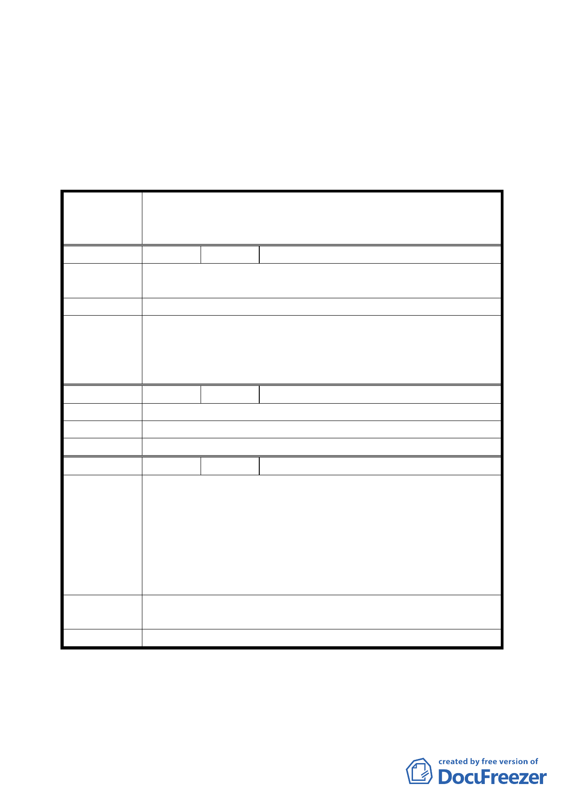

決議：
一、本案內容除肆、計畫內容一、變更計畫內容有關變更及計畫
面積予以分別標示明確外，其餘照案通過。
二、有關公民或團體陳情意見決議情形詳如綜理表。
臺北市都市計畫委員會公民或團體所提意見綜理表
變更臺北市松山區美仁段二小段 888-1 地號等 4 筆機關用地
案 名 暨擬定同小段 884 地號等 4 筆機關用地（供警察局松山分局
及本府其他公務機關使用）細部計畫案
編 號 １ 陳情人 黃麗美
陳情理由
希望能有一棟像民生活動中心一樣可以提供松山區的里民活
動使用。
建 議 辦 法 利用蓋松山分局規劃納入區民活動中心。
因考量本機關用地之開發量體尚未能容納松山區有關行政單
委員會決議
位及區民活動中心之使用，且可能造成警察局松山分局提升
警政辦公服務之原意未逮，故本建議留供市府於松山區相關
建設參考。
編
號2
陳情人 劉張春美
陳 情 理 由 因美仁里及周邊里均無區民活動中心。
建 議 辦 法 請於規劃時能列入。
委員會決議 同編號 1 決議。
編
號3
陳情人 林正竹
1.目前的松山區公所及戶政事務所位置，道路狹窄、交通壅
塞，連停機車都非常困難，區民利用非常不便。
2.目前松山區民相關行政單位分散四處，如區公所及戶政事
陳 情 理 由 務所近南港區。松山地政事務所竟在信義區，稅捐松山分
處又在其他地方，若有辦相關聯事務時，往返非常累人。
3.現有的公車專用道及未來的捷運松山線開通，也能讓松山
區民非常便利來往運用。
建議辦法
希望能將松山區所有相關的行政單位遷移至此，如松山區區
公所地政事務所戶政事務所稅捐處等等。
委員會決議 同編號 1 決議。
討論事項三
案名：變更臺北市文山區武功國小西北側部分學校用地為機關用
三